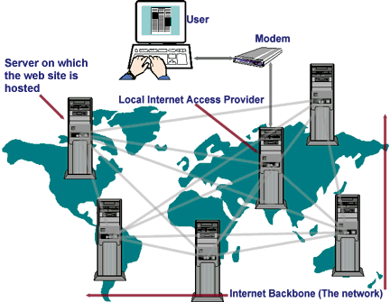

Module 4: Deploying Web Apps - Web Unit 3 Sprint 11
Explain How the World Wide Web Works
The "world wide web" (which we'll refer to as "the web") is a part of the internet - which is itself a network of interconnected computers. The web is just one way to share data over the internet. It consists of a body of information stored on web servers, ready to be shared worldwide.
Web Servers
The term "web server" can mean 1) a computer that stores the code for a website or 2) a program that runs on such a computer.
The physical computer device that we call a web server (like the one shown below) is connected to the internet. A web server stores the code for different websites to be shared across the world at all times. When we load the code for our websites, or web apps, on a server like this, we say that the server is "hosting" our website/app.
However, the server itself needs some code to tell it what to do. That software program is called - a web server! Its main purpose is to "serve" web pages it retrieves from your project code to users upon request.
While hosting websites has traditionally been a fairly involved task, nowadays, it is quicker than it ever has been before. Gone are the days of setting up a server program through services like Apache or Windows IIS, renting the physical server space from a large company, or buying server hardware.
How Servers Share Info
When you set up app hosting, what's the first thing you always do? You open a browser and navigate to the web address to see it live, of course! So how does that work? There are a couple of key components we want to look at that are part of this process.
Domain Names and URLs
In 1984, a couple of decades after the first computers and networks were invented, the Domain Name Service (DNS) was introduced. This was a concept where computers could distinguish themselves from one another. As a result, six domains that you will probably recognize were introduced: edu (education), gov (government), mil (military), com (commercial), net (network resources), and org (organization).
Just a few short years later, in 1991, the worldwide web network was opened to the world and incorporated the new HTML computer language. HTML uses specifications for Uniform Resource Locators (URLs). These URLs became (and remain) the universal standard for locating website addresses.
By definition, a URL is a formatted text string referring to the location of a resource on a computer network (most commonly the web). Typically, these resources are web pages, but they can also be text documents, graphics, programs, or pretty much anything that can be stored digitally.
Bringing It All Together
Combining this all together, we learn that computers can connect to the internet via the world wide web, locate a specific server computer through a URL and domain name, and retrieve information or resources from that server.
What Does it Mean to Deploy a Static Website?
The internet is a great tool, but it would be useless without data to share with users. Most data on the web is shared through websites and web applications. Let's talk about how these sites are made available on the web through deployment.
How to Build It
Web App Deployment
Web apps are made up of code - primarily JavaScript. When we want to deploy our web app to the world wide web, we need to host that project on a web server to serve up to people connected to the web. Many services allow you to "rent" server space for your web app. You can deploy web apps to Amazon AWS servers, Google Cloud Platform, Netlify, Heroku, Gatsby, Github Pages, and Vercel (which we'll learn about in this module) among many, many others.
Services like these are a huge step up in modern technology that allows us to deploy sites with the click of a button or right in your terminal. Today, we are lucky to do this with so much ease, at least compared to the "good ol' days."
Static vs Dynamic Apps
Deploying a static web app is a little different than deploying a dynamic web app. Most of the apps that you have built up to this point are static apps. A basic definition of a static site has hardcoded data that doesn't change. A lot of our React apps use data from third-party libraries but still deploy like a static app.
Deploying a dynamic web site with accompanying server and database is more complicated than a static site that might consume a third-party API.
Deploying to Vercel
To start, please go to Vercel and sign up for an account with your Github profile. Once you do that, move on to the follow-along section to deploy a React app using Vercel.
How to Build It
Getting Started with Vercel
Getting started with Vercel takes just a few steps. After that, you can get up and running with a new project in less than a minute.
Account Creation & Onboarding
Let's start by creating a new Vercel account. You can make a new account by logging in with GitHub. You'll immediately be taken through an onboarding flow.
Step-by-Step Deployment Process
- Sign up with GitHub and authorize Vercel with your GitHub account
- Browse all templates and find the "create-react-app" template
- Choose your account to manage projects for free
If you create a team account, you will be charged after a free trial period.
- Choose GitHub for your git platform
This will allow Vercel to create a new React app and push the code for that project to your GitHub account.
- Give your Vercel project a name
Remember the name so you can name the git repo the same thing in the coming steps.
- Click on the git scope dropdown and choose "Add GitHub Org or Account"
A new window will open to allow you to "install" Vercel in your GitHub account. Click on Install.
- Choose a name for your git repository
Use the same name you chose for your Vercel project.
- Click on continue to create a new React app, deploy it, and push it to your GitHub!
Once deployment is complete, you can visit the deployed site or go to the project dashboard in Vercel.
Module 4 Project: Deploying React Apps
Practice deploying a web app using Vercel by deploying an app you've made previously and adding it as a portfolio piece. Upload a link to your deployed app.
Instructions
The link below takes you to Bloom's code repository of the assignment. You'll need to fork the repo to your own GitHub account, and clone it down to your computer:
Starter Repo: Deploying React Apps
- Fork the repository,
- clone it to your machine, and
- open the README.md file in VSCode, where you will find instructions on completing this Project.
- submit your completed project to the BloomTech Portal